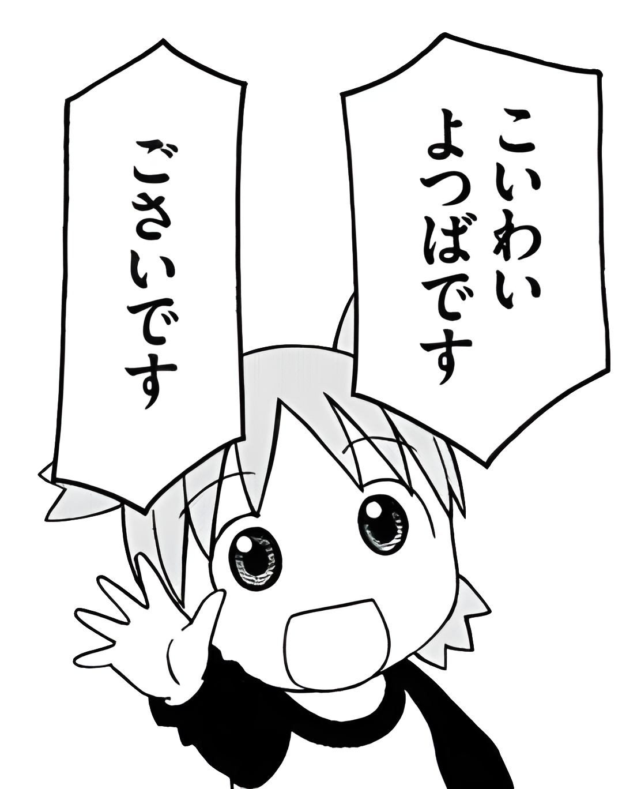

How Yotsuba uses language
- Yotsuba is an adopted, foreign kid who lives with her single father, and so her speech is largely influenced by him.
- Because of this, she uses some more masculine and casual speech patterns.

- If this is your first exposure to native reading material, this may be a bit confusing at first - but don't worry, with just a few tips it should be a lot easier!
@kallisto-no-planetarium